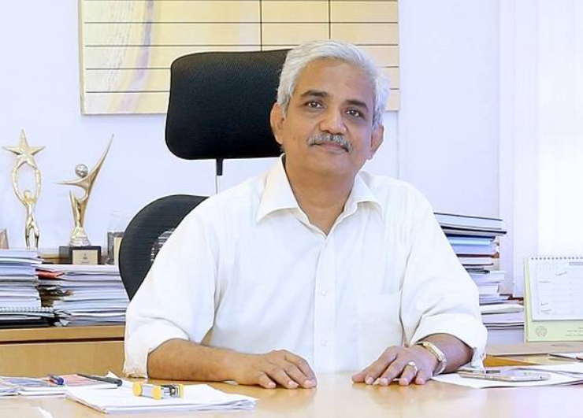

It is a privilege for me to have assumed the position of Director, NIT Rourkela, on
18th February 2022. NIT Rourkela has a rich legacy of sixty dedicated years of service to the nation and is
the pride of Odisha. Excellence in teaching and high-quality research are the pillars on which the Institute
is built. The Institute aims to foster 21st-century skills and competencies supported by defined learning
frameworks and industrial internships for the students as part of Industry 4.0. With these skillsets, our
students are future-ready to make an impact at work in general and society in particular.

Long-term innovative research support systems like Center of Excellence, under the
ambit of Advanced Research Centre (ARC), will aid in achieving a noticeable imprint in AI & ML, smart
technology in mining & metallurgy, energy & environment, and global warming. NITR emphasizes the need to
promote entrepreneurship by introducing Entrepreneurial Spirit and Startups as part of its curriculum, which
will enable technology commercialization to maximize R & D outcomes. The Institute is at the crossroads
where its performance is measured by its National Institutional Ranking Framework (NIRF) position. The time
is ripe for all the stakeholders to work on converged ideas to achieve the much-deserved position at the
national and international levels.